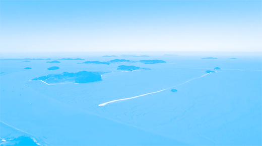
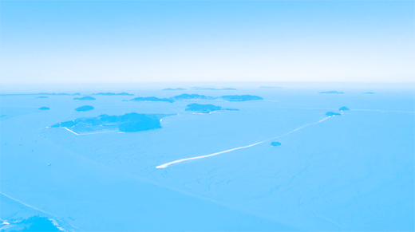
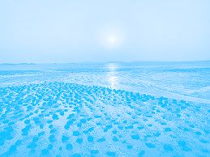
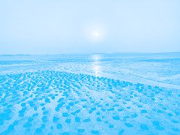

그래서 찾은 해답
BLUECARBON

이러한 문제점을 보완하는 새로운 자원이 있다.
바로 블루 카본이다. 블루 카본은 물에서 탄소를 흡수하는 식물 생태계를 의미한다. 갈대숲이나, 해초림, 수중에 있는 여러 해초들이 그 예시다.
이러한 블루카본은 그린카본에 비해 그린 카본에 비해서 면적은 상당히 좁은 반면
①면적 대비 흡수량이 높아 효율이 좋고,
②흡수하는 속도 또한 그린 카본에 비해 50배나 더 빠르다. 나무가 없어지면 그 탄소 흡수량이 무효화 되는 반면,
③탄소를 흡수한 염생 식물의 사체는 바다에 퇴적되어 격리된다.
탄소 감축의 새로운 미래를 블루 카본에서 찾아야 한다.
블루 카본은 크게 세 가지가 있다.
1.맹그로브: 아열대/열대 해변, 하구의 습지에서 발달하는 숲
2.잘피림: 해수에 완전히 잠겨서 자라는 식물의 통칭
3.염습지: 갈대, 칠면초 등 염생 식물이 숲을 이루고 있는 지형
우리나라에 있는 갯벌도 블루 카본에 들어간다. 우리나라의 갯벌같은 경우는 염생 식물이 자라지 않는 비식생 갯벌인데도 어떻게 탄소를 흡수하는 걸까?
갯벌의 퇴적물 표층에는 아주 많은 *미세 조류가 살고 있다. 이 미세 조류들이 광합성을 하며 탄소를 흡수한다. 이 미세 조류들은 빨리 생상되고 빨리 침적되기 때문에 그 흡수 속도가 상당히 빠르다. 그래서 우리나라 갯벌의 탄소 흡수량은 연간 최소 26만톤에서 최대 49만 톤에 이른다. 이 양은 승용차 20만대 분량이 연간 내뿜는 탄소의 양과 맞먹는다.
저서미세조류: 헌미경적 크기의 단세포성 생물 그룹/저서 환경에 살면서 광합성을 하는 작은 생물을 총칭
 

 
